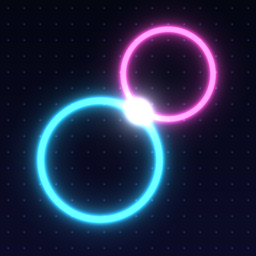

A glowing dot runs around a chain of circles. Tap at the exact moment it reaches the point where two circles touch and it skips onto the next ring. Chain clean skips to raise your multiplier; it keeps getting faster.
How do I play?
Tap anywhere when the dot reaches the bright touch point between two rings. Tapping too early or too late ends the run. Letting the point go by without tapping only breaks your combo; the dot loops round for another try.
How is the score counted?
Every skip scores 10 points, doubled for a PERFECT tap, times your multiplier. Every 5 skips in a row raise the multiplier, up to ×10.
Where are the rankings?
Tap RANKINGS on the start or results screen to open the Game Center leaderboard. Your best score is sent to it automatically when you are signed in to Game Center.
Where is my progress?
Your best score and sound setting are kept on your device only.
Questions and feedback: jiezhou0731@gmail.com